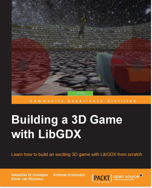
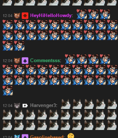
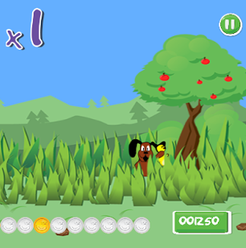
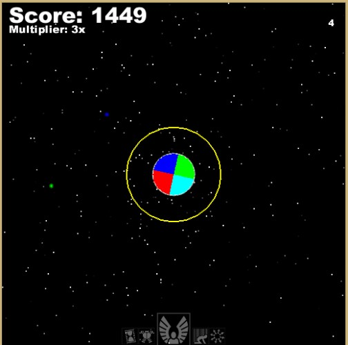
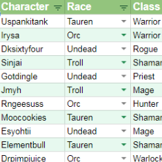

Andreas S. Krühlmann
What I Know
Where I've Worked

|
Siemens MoblityI've been working in Siemens Mobility for over 3 years together with students from the Techinal University of Denmark during their undergraduate, master or PhD projects. I've had rich opportunity to explore many different tools and environments for working with vastly different projects, all the while I've been sharpening my affinity for problem solving especially in the face of uncertainty and unpredictable requirements. This in turn has molded me into a very pragmatic and creative developer, and although potency of standards and conventions is undeniable, thinking outside the box has proved a healthy way for solving many of the challenges I faced during my work.
The nature of the tasks I was assigned in Siemens was ever changing; one moment I was making a full stack project for a sister division, the next I was crafting VBA macros for a legacy system. This way I learned a lot about the avaliabillity of tools and frameworks and their desired applications, even though I often ended up writing Python code once again. |
|
|
DeeepgamesI am the co-founder of a small mobile game company with my colleagues Sebastian and Elmar. I was introduced to Elmar and Sebastian through an online game development forum and we soon started participating in game jams, where games are created in either 24 or 48 hours, to hone our abillities. We were all resonably proficient in Java and we made a few good (and one not so good) projects for the jams. After a year of making smaller projects in a limited time we began the development of our first serious mobile game; Bird Hunter. Even though the game did not end up on the top ten most downloaded apps of 2015 it did end up getting us a book contract from Packt Publishing, which ultimately culminated in the toughest, yet most polished, project we had completed; Building a 3D Game With LibGDX. The book was released and serves as a rigerous introduction into the world of Java 3D game development seen through the eyes of the LibGDX graphics framework. |
What I've Made Privately
|  |
Building a 3D Game with LibGDXI am a co-author of "Building a 3D Game with LibGDX", a book which guides the reader through the process of creating a 3D game from scratch using the LibGDX framework. The book covers topics like modeling, virtual cameras, particles, user input on mobile and desktop, collision, game design and more. The target audience is developers familiar with Java, but beginners or novices when it comes to game development and LibGDX. -Packt Publishing store |
|  |
Gas botGas bot was developed mainly for a Twitch user "ruwin" to help facilitate growth in his viewership. The bot allows user watching the stream to interact with the streamer by playing sounds, showing emotes on the screen completing missions and more. The bot rewards viewers for sticking around by awarding active users points, which they can then spend on these various activities. The bot was developed primarily using Python 3, SQL and C#. -GitHub repository |
|  |
Bird Hunter"Bird Hunter" was Deeepgames first experience with polishing a game beyond what is required to participate in a ludum dare event. We based the game play on a classic arcade game, while we added our own touches and optimized it for the Android device. This was also our first experience with buying assets from a contractor, since we didn't have any advanced graphics design skills and we wanted the final product to look very polished. The game was made in Java for the Android platform. -Google Play |
|  |
Mega Blobber"Mega Blobber" was the first game I developed with my co-programmers at Deeepgames. The game was made for a ludum dare contest in which contestants have to make a game from scratch in 48 hours based on a theme. The game was made in Java for the desktop platform and Android. -Ludum dare submission Google Play GitHub repository |
Battle in the AtlanticAnother game I developed with my team at Deeepgames. Like Mega Blobber this too was a product of a game jam, BaconGameJam, where releasing the game was more of an afterthought. We had upgraded the graphics from Mega Blobber with actual sprites animations and environment while also adding to the complexity of the game mechanics. The game was made in Java for the Android and desktop platforms. -Google Play |
|
|
Podcaster.pyA small scale python script which allows the user to subscribe to YouTube channels and thereby downloading their latest 5 videos as audio files (m4a/mp3/ogg). This allows users to treat YouTube series or single videos as podcasts for syncing with their media player, without the need for the content creator to set up a subscription system for their series/videos. The tool was made using Python 3.* and will only run on the Windows platform as it currently uses the ffmpeg MP3 encoder to create the MP3 files. -GitHub repository |
|  |
GuildMateA Google Sheets spreadsheet which facilitates guild management for classic World of Warcraft players The sheet features a black list, which keeps track of players, who should be avoided when forming parties to complete objectives, a guild list, which shows all the current guild members, as well as a raid progress page where an overview of the guild's raiding progress can be seen. The tool was made using Javascript running on Google Scripts and can be accessed using any modern browser. -Preview |